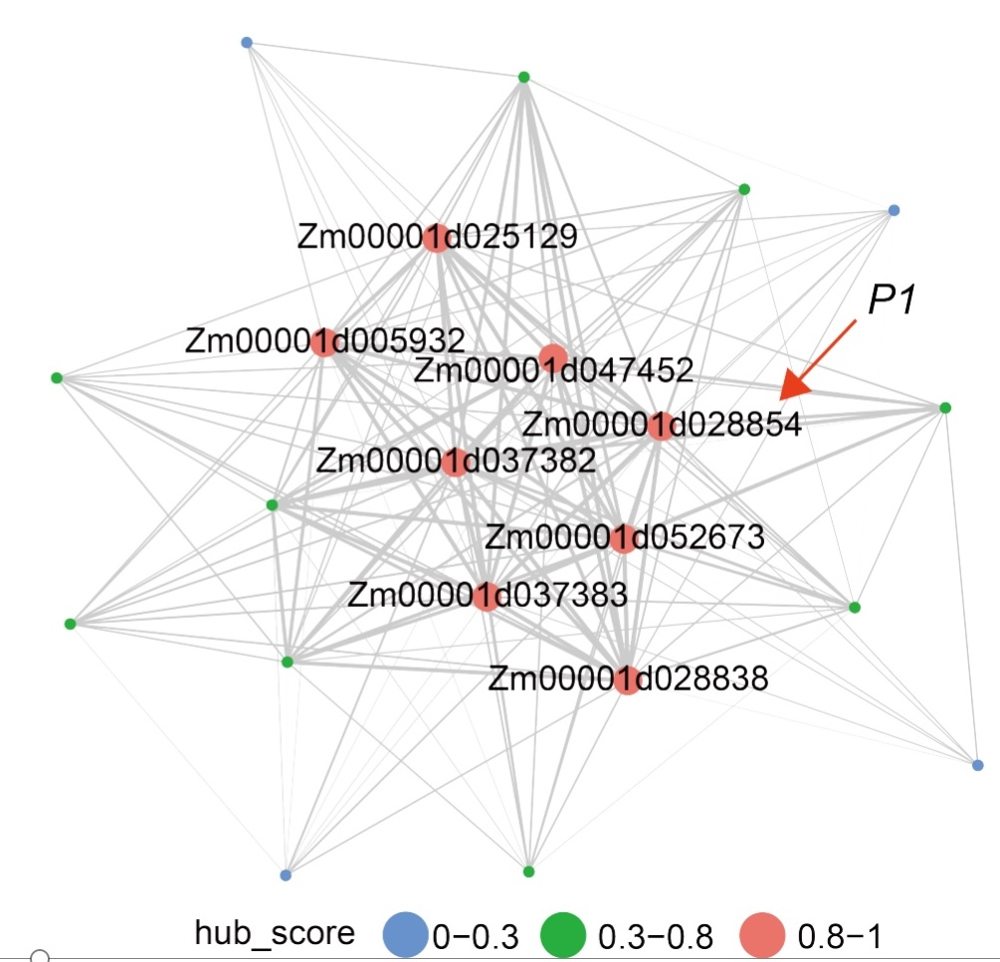
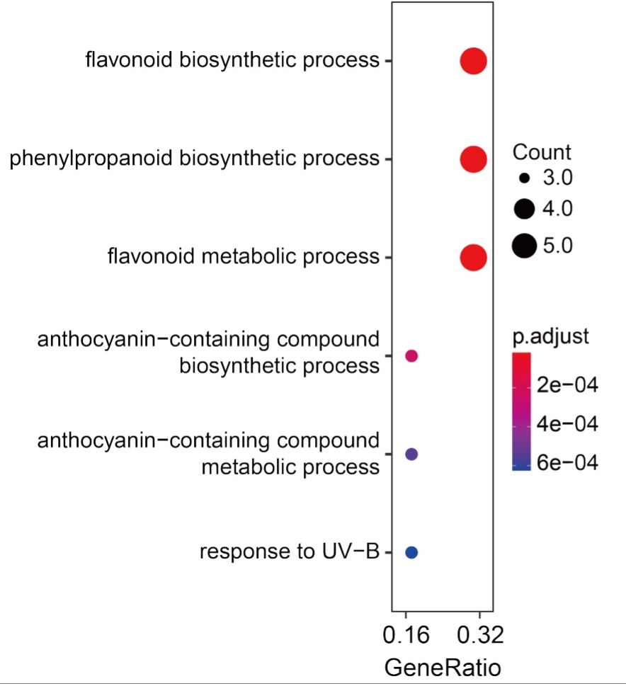

Quickstart
This section is mainly intended for the installation of MRBIGR and the briefly introduction of several typical usage of MRBIGR to help users get started quickly. Details and advanced usage of MRBIGR, please see Tutorial section
Installation
Installation of MRBIGR
1. Download and install MRBIGR
1.2 Download MRBIGR
git clone https://github.com/liusy-jz/MRBIGR.git
1.3 Activate a new conda environment
conda create -n mrbigr python=3.9 -y
conda activate mrbigr
1.4 Build and install
cd MRBIGR
python setup.py build
python setup.py install
2. Install dependencies and configure environment
2.1 Install dependencies
pip install pyranges
conda install -y -c conda-forge r-rcppeigen r-xml r-rsqlite r-europepmc r=3.6 rpy2
Rscript -e 'install.packages(c("data.table", "ggplot2", "ggsignif", "ggrepel","Matrix", "igraph", "network", "GGally", "sna", "europepmc","ggraph"), repos="https://cloud.r-project.org")'
Rscript -e 'if (!requireNamespace("BiocManager", quietly = TRUE)) install.packages("BiocManager", repos="https://cloud.r-project.org");BiocManager::install(c("AnnotationForge","clusterProfiler"))
Rscript -e 'install.packages("bigsnpr", dependence=T, repos="https://cloud.r-project.org")'
2.2 Set environment variables
echo "export PATH=`pwd`/utils:\$PATH" >> ~/.bashrc
source ~/.bashrc
 Depends: R(>=3.6), python(>=3.7)
Depends: R(>=3.6), python(>=3.7)
Usage of MRBIGR
MRBIGR consists of seven analysis modules: genotype based analysis module geno, phenotype based analysis module pheno, GWAS and QTL related analysis module gwas, Mendelian randomization ralated analysis （three module：Mendelian randomization analysis module mr, MR-based network construction module net and gene ontology analysis module go） and data visulaization module plot. Each module can be invoked via a subcommand, and each module also provides several functions which can be called with corresponding parameters. In this part, only several commonly used functions in each module are shown as examples. For more detailed instructions, please refer to the Tutorial section.
1. Genotype data process
Suppose we have a set of plink-bed format genotype data named geno.bed/geno.bim/geno.fam. First, quality control of the original genotype data should be performed through the below command:
MRBIGR.py geno -qc -g geno -o geno_qc -maf 0.05 -mis 0.2 -mind 0.2
The subcommand geno invokes the genotype analysis module; parameter –qc calls the quality control function; –g is the plink-bed format input genotype data; -o is the output genotype data prefix; -maf is the MAF for a SNP to be kept; -mis is the maximum proportion of missing values for a SNP to be kept; -mind is the maximum proportion of missing values for a sample to be kept.
After this step, the QC-filtered genotype data geno_qc.bed/geno_qc.bim/geno_qc.fam would be generated. Then, dimensionality reduction of the original genotype data could be performed using the below command:
MRBIGR.py geno -clump -g geno_qc -o geno
The subcommand geno invokes the genotype analysis module; parameter –clump calls the genotype clumping function to keep only one representative SNP per region of LD; –g is the plink-bed format input genotype data, -o is the output genotype data prefix (suffix _clump will be added automatically for the output files). After this step, the clumped genotype data geno_clump.bed/geno_clump.bim/geno_clump.fam would be generated. Then, take the dimensional reduced genotype data as input to perform principal component analysis using the below command:
MRBIGR.py geno -pca -g geno_clump -o geno
The subcommand geno invokes the genotype analysis module; parameter –pca calls the principal component analysis function; –g is the plink-bed format input genotype data; -o is the output genotype data prefix (suffix_pca will be added automatically for the output files). After this step, an output file named geno_pca.csv would be generated in the working directory.
2. Phenotype data process
Suppose we have a CSV format phenotype file named pheno.csv, the first column and the first row should be the names of samples and traits, respectively. First, quality control of the original phenotype data should be performed through the below command:
MRBIGR.py pheno –qc -p pheno.csv -o pheno_qc -mis 0.5 -val 0.1 –rout
The subcommand pheno invokes the phenotype analysis module; parameter –qc calls the quality control function; -p is the input phenotype matrix; -o is the prefix of output file; -mis is the missing rate cutoff; -val is the small value cutoff; -rout means outlier removal of phenotypic values with the default method. After this step, a QC-filtered phenotype data named pheno_qc.phe.csv would be generated. Then, take this file as input, perform missing phenotypic value imputation through the below command:
MRBIGR.py pheno –-imput -p pheno_qc.phe.csv -o pheno_imput
The subcommand pheno invokes the phenotype analysis module; parameter –imput calls the phenotype imputation function; -p is the input phenotype matrix; -o is the prefix of output file.
After this step, a phenotype file named pheno_imput.phe.csv with no NA value would be generated. Then, take this file as input to perform phenotypic value normalization using the below command:
MRBIGR.py pheno –scale -p pheno_imput.phe.csv –o pheno_norm -boxcox -minmax
The subcommand pheno invokes the phenotype analysis module; parameter –scale calls the phenotype scaling/normalization/standardization/transformation function; -p is the input phenotype matrix; -o is the prefix of output file, -boxcox and -minmax means perform both box-cox normalization and min-max scaling of the input data. After this step, a phenotype file named pheno_norm.phe.csv with normalized and scaled phenotypic values would be generated.
In some cases, phenotype data are collected from different environment or years, which should be merged through appropriate algorithm such as mean-values or BLUP before further analysis. Here is an example, take one trait from different environment as input, the below command line will merge all the columns using BLUP algorithm:
MRBIGR.py pheno -merge -p trait1.csv -o trait1_blup -mm blup
The subcommand pheno invokes the phenotype analysis module; parameter –merge calls the phenotype merge function; -p is the input phenotype matrix for a trait in CSV format; -o is the prefix of output file; -mm is the merge method. After this step, a phenotype file named trait1_blup.phe.csv with BLUP merged phenotypic values would be generated.
3. GWAS and QTL detection
Take the processed plink-bed format genotype data and CSV format phenotype data as inputs, GWAS can be performed through the below command:
MRBIGR.py gwas -gwas -model lmm -thread 12 -g geno_qc -p pheno_norm.csv
The subcommand gwas invokes the GWAS and QTL analysis module; parameter –gwas calls the GWAS function; -model is the model to fit, with linear mixed model (lmm) by default; -thread is the thread number to run the command; -g is the plink-bed format input genotype data; -p is the CSV format phenotype data. After this step, an output directory would be generated with the GWAS result files named trait_name.assoc.txt in it. Then, QTL can be determined using the below command based on the GWAS results:
MRBIGR.py gwas -qtl -g geno_qc -thread 6 -i output -o qtl_output -p1 1e-5 -p2 1e-3 -p2n 5
The subcommand gwas invokes the GWAS and QTL analysis module; parameter –qtl calls the QTL detection function; -thread is the thread number to run the command; -i is the GWAS result directory; -o is the output file prefix; -p1 is the significance threshold for index SNPs used to determine QTLs; -p2 is the secondary significance threshold for clumped SNPs used to determine the reliability of QTLs; -p2n is secondary significance SNP number in a QTL. After this step, an output file named qtl_output.qtl_res.csv would be generated. If you want to generate manhattan-plots and QQ-plots for visualization of the GWAS results, the below command should be helpful:
MRBIGR.py gwas -visual -thread 12 -i output -o vis_output -multi -q qtl_output.qtl_res.csv
The subcommand gwas invokes the GWAS and QTL analysis module; parameter –visual calls the visualization function; -thread is the thread number to run the command; -i is the GWAS result directory; -o is the output directory for the generated plots files; parameters -multi and –q are optional, if –multi is set to generate a multi-traits manhattan-plot, –q which is the QTL result file also need to be set.
4.Mendelian randomization related analysis
Take the plink-bed format genotype data, CSV format exposure data, CSV format exposure QTL data and CSV format outcome data as inputs, Mendelian randomization analysis can be performed through the below command:
MRBIGR.py mr -g geno_qc -exposure exposure.csv -qtl exposure_qtl.csv -outcome outcome.csv -mlm -thread 12 -o mr_out
The subcommand mr invokes the Mendelian randomization analysis module; parameter -exposure is the CSV format exposure data; -outcome is the CSV format outcome data; -qtl is the CSV format exposure QTL data; -thread is the thread number to run the command; -g is the plink-bed format input genotype data; -mlm represents perform Mendelian randomization analysis through mixed linear model; -o is the prefix of output file. After this step, a MR result file named mr_out.MR.csv would be generated.
It also can take the CSV format population gene expression data and CSV format gene QTL data as inputs, pairwise genes Mendelian randomization analysis can be performed through the below command:
MRBIGR.py mr -g geno_qc -gene_exp gene_exp.csv -pairwise -mlm -qtl gene_qtl.csv -thread 12 -o pairwise_mr_out
The subcommand mr invokes the Mendelian randomization analysis module; parameter -gene_exp is the CSV format population gene expression data; -qtl is the CSV format gene QTL data; -thread is the thread number to run the command; -g is the plink-bed format input genotype data; -mlm represents perform Mendelian randomization analysis through mixed linear model; -o is the prefix of output file. After this step, a MR result file named pairwise_mr_out.MR.csv would be generated. If you want to perform Mendelian randomization analysis between transcription factor and genes it targets, the below command should be helpful:
MRBIGR.py mr -g geno_qc -gene_exp gene_exp.csv -tf tf_genefunc.txt -target target_genefunc.txt -mlm -qtl tf_qtl.csv -threads 12 -o tf_mr_out
The subcommand mr invokes the Mendelian randomization analysis module; parameter -gene_exp is the CSV format population gene expression data; -qtl is the CSV format transcription factor QTL data; -tf is the transcription factor annotation file; -target is the annotation files for genes targeted by transcription factors; -thread is the thread number to run the command; -g is the plink-bed format input genotype data; -mlm represents perform Mendelian randomization analysis through mixed linear model; -o is the prefix of output file. After this step, a MR result file named tf_mr_out.MR.csv would be generated.
5.MR-based network construction
Take the CSV format Mendelian randomization analysis data as input, Mendelian randomization based network analysis can be performed through the below command:
MRBIGR.py net -mr pairwise_mr_out.MR.csv -plot -o net_out
The subcommand net invokes the Mendelian randomization based network analysis module; parameter -mr is the CSV format Mendelian randomization analysis data; -plot represents plot network for each identified network module; -o is the prefix of output file. After this step, network edgelist file net_out.edge_list, ClusterONE software result net_out.clusterone.result.csv, network module plot net_out.module*.pdf and final network module file net_out.module.csv would be generated.

6.Gene ontology analysis of network modules
Take the CSV format network module data, Tabular format gene ontology annotation of each gene data and Tabular format gene annotation data as inputs, gene ontology enrichment analysis of each module can be performed through the below command:
MRBIGR.py go -gene_lists net_out.module.csv -go_anno go_anno.txt -gene_info gene_anno.txt -o go_out
The subcommand go invokes the gene ontology enrichment analysis module; parameter -gene_lists is the CSV format network module data; -go is the tabular format gene ontology annotation of each gene data; -gene_info is the tabular format gene annotation data; -o is the prefix of output file. After this step, gene ontology enrichment analysis result go_out.GO.csv, visualized results of functional enrichment results go_out.BP.dotplot.pdf, go_out.MF.dotplot.pdf and go_out.CC.dotplot.pdf would be generated.
